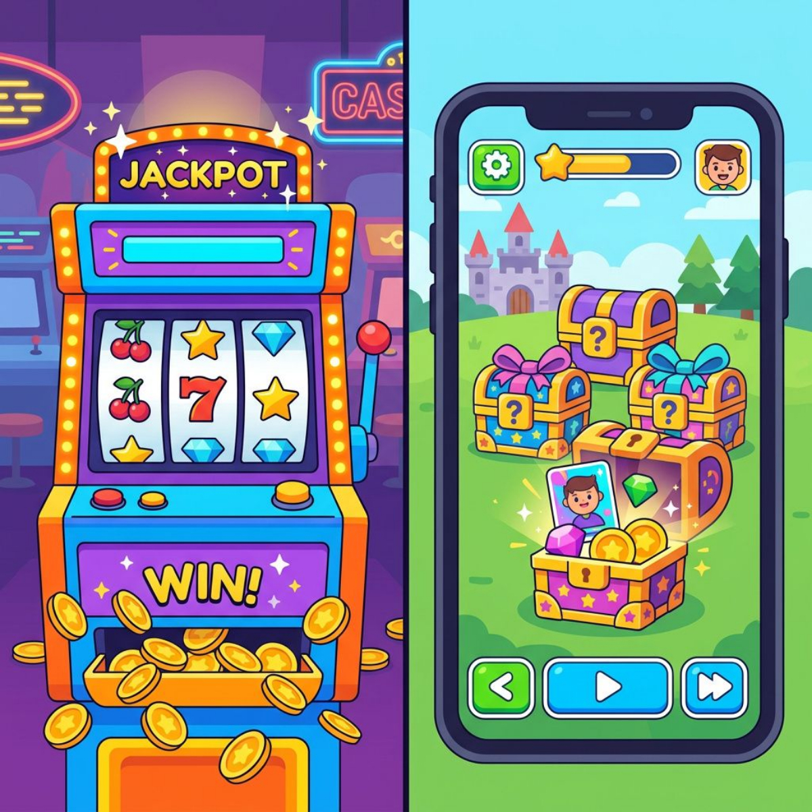

Daniel Gaiswinkler | Das Projekt e.V. + Eschenburgschule 3. März 2026 · 17:30 Uhr · Eschenburgschule Eibelshausen
Ankommen
Ich bin auch nur ein Vater.
Internet-Nerd. Passionierter Gamer. KI-Berater. Und ich bin selbst viel zu oft am Handy.
"Ich erwische mich ständig dabei. Dieses automatische Greifen zum Handy – beim Frühstück, auf der Couch, wenn die Kinder spielen. Obwohl ich es besser weiß."
Wenn es bei uns Erwachsenen schon so krass wirkt – wie krass wirkt es dann erst bei unseren Kindern?
Ankommen
Euer Smartphone dealt Dopamin.
205×
checken wir das Handy pro Tag
90%
spüren Phantom- Vibrationen
IQ ↓
Handy liegt nur daneben und du denkst schlechter
"Wir haben Verhaltens-Kokain über das gesamte Interface verstreut."
– Aza Raskin, Erfinder des Infinite Scroll (bereut es öffentlich)
Eisbrecher
Kurze Umfrage
Hand hoch, ehrlich sein!
Wer hat ein Kind, das schon ein Smartphone hat?
Wer hat ein Kind, das sich dringend eins wünscht?
Wer hat selbst mehr als 2 Stunden Bildschirmzeit am Tag? 👀
Realitätscheck
90%
von uns Eltern schauen mindestens einmal pro Stunde aufs Handy, wenn wir mit unseren Kindern zusammen sind.
Phubbing = Phone + Snubbing (jemanden vor den Kopf stoßen) Das Handy nutzen, statt sich dem Gegenüber zuzuwenden.
Die Realität
Was glaubt ihr, was eure Kinder auf dem Smartphone machen?
2-3 Minuten offene Runde
Die Realität
Die Zahlen
63%
der 10-11-Jährigen haben ein Smartphone
105 Min
Gaming pro Tag (Werktage)
157 Min
Social Media pro Tag (Werktage)
Quelle: KIM-Studie 2024, mpfs
Die Realität
3 Dinge, die mich als Nerd komplett umgehauen haben
1. Was im Internet frei zugänglich ist – Horror, Gore, Kriegsvideos (YouTube, TikTok, diverse Webseiten)
2. Wie die Gaming-Industrie Sucht designt – kein Zufall, sondern Kalkül
3. Wie hilflos selbst technikaffine Eltern sind – Kindersicherung? Kinder hacken alles
Die Realität
Die beliebtesten Apps eurer Kinder
App
Alter
Realität
WhatsApp
ab 16
50%+ der 6-13-Jährigen nutzen es
TikTok
ab 13
38 Stunden/Monat Nutzungsdauer
Roblox
USK 16!
40% der Nutzer unter 13
YouTube
ab 13
85% der Inhalte enthalten Werbung
Fortnite
ab 12
Skins kosten bis zu 20 Euro
Brawl Stars
ab 9*
Stiftung Warentest: "inakzeptabel"
Die Realität
Gore & Horror im Netz: Frei zugänglich für jedes Kind
1 von 5
Kindern sieht extreme Gewalt ohne danach zu suchen
Ab Kl. 5
Gore-Videos als Mutprobe im Klassenchat
"Ab der 5. Klasse laufen Gore-Videos als Mutprobe im Klassenchat: 'Wer traut sich?' Ab der 7. Klasse lachen die Kinder nur noch."
YouTube • TikTok • Gore-Webseiten • Telegram
Kriegsvideos • Enthauptungen • Verstümmelungen Alles als HD-Video mit Ton. Kein Alterscheck. Kein Jugendschutz.
Quelle: OFCOM-Studie, März 2024
Die Realität
Cybergrooming
25%
der 8-17-Jährigen sind betroffen
3.457
Fälle PKS 2024 (+34% zum Vorjahr)
"Die meisten Täter warten heute im Internet auf Kinder – nicht im Park."
Erwachsene erschleichen sich das Vertrauen von Kindern, um sexuelle Kontakte anzubahnen.
Die Realität
Gaming-Industrie: Bewusstes Suchtdesign

26 Mrd. $
Fortnite-Umsatz (2017–2023) – Mehr als Avatar + Avengers + Titanic zusammen
FOMO
"NUR HEUTE 45 Extra-Diamanten!"
Spielerirrtum
"Jetzt MUSS was Gutes kommen!"
Sunk Cost
"Hab schon 200€ investiert…"
Lootboxen
= Glücksspiel in Kinderfarben
Stiftung Warentest Mai 2024: 15 von 16 Handy-Spielen “inakzeptabel” für Kinder
Die Realität
Die Macher bereuen es: Insider packen aus
"Wir haben wunderbare technische Werkzeuge in eine Waffe verwandelt. Wer das meiste Geld bietet, darf sie auf unseren Kopf richten."
– Aza Raskin, Center for Humane Technology — Miterfinder des Infinite Scroll
"Apple Watches, Google Phones, Facebook, Twitter schaffen es mit nur einem Klick, den nächsten Dopaminrausch in uns auszulösen."
– Tony Fadell — Miterfinder von iPhone und iPod
"Das Geschäftsmodell des Silicon Valley: Es schenkt uns seine Produkte — und macht dafür uns zu Produkten."
– Andrew Keen, Autor “How to Fix the Future”
Die Realität
Sexting & Recht
25%
der 11-17-Jährigen erhielten eine Sexting-Nachricht
Kind erhält Bild → Nicht strafbar – aber Pflicht es zu löschen
Kind leitet weiter → §184b StGB – Verbreitung = strafbar (auch unter 14: Polizei kommt, Geräte werden beschlagnahmt)
Kind erstellt selbst → §184b StGB – Herstellung = strafbar
Die Realität
Pornografie
42%
der 11-17-Jährigen haben bereits Pornos gesehen
12,7
Jahre – durchschnittliches Alter beim Erstkontakt
60% der Mädchen: ungewollter Kontakt •
Oft der erste Kontakt mit Sexualität
Folgen für Mädchen: Essstörungen, verzerrtes Körperbild, Selbstwert-Krise Social Media + Pornografie vermitteln unerreichbare Schönheitsideale – Kinder hören auf zu essen, um “perfekt” auszusehen.
Die Realität
Kostenfallen
33.000 Euro
In-App-Käufe eines 7-Jährigen.
Über 20 Monate. Dokumentierter Fall.
Lootboxen (wie auf der vorherigen Folie gesehen)
Dark Patterns = Design, das Kinder in Käufe lockt
Die Realität
Mediensucht
"Ein Tsunami rollt auf uns zu."
– Prof. Rainer Thomasius, UKE Hamburg
25%
problematische Nutzung (1,3 Mio.)
4,7%
pathologisch abhängig (+126%)
Offiziell anerkannte Krankheit
Gaming Disorder (seit 2022)
Die Realität
KI & Deepfakes: Man kann nichts mehr glauben.
Eine KI-generierte Oma erklärt in einem Video, dass man heutzutage nichts mehr glauben kann. Das Video selbst ist der Beweis.
Deepfake-Pornos KI erstellt Nacktbilder von Mitschülern aus normalen Fotos
Stimmen-Klone KI imitiert Eltern-Stimmen – neuer Trick bei Betrug
Wenn wir das nicht erkennen – wie sollen es unsere Kinder?
Die Realität
Vernetzt und trotzdem allein.
50%
der Jugendlichen fühlen sich regelmäßig einsam
70%
weniger persönlicher Kontakt als früher
3×
häufiger isoliert bei Heavy Usern
"Einsamkeit ist so schädlich wie 15 Zigaretten am Tag rauchen."
– US Surgeon General, 2023
500 Likes ersetzen kein einziges echtes Gespräch.
Ja, das sind harte Zahlen.
Aber: Panik hilft nicht. Wissen schon.
Was können wir also tun?
Praktische Werkzeuge
Ehrliche Warnung: Die Kinder hacken euch.
"Wir haben ein Amazon Kids Tablet gekauft. Bildschirmzeit eingestellt – fummelig, aber geschafft. In der Praxis? Hat NULL gegriffen. Die Filter waren totaler Mist."
– Eigene Erfahrung
~100%
der Jugendlichen in Kl. 8 haben die Eltern-PIN geknackt
3–4
Apps braucht ein Nerd-Vater für Bildschirmzeit-Kontrolle
Technik ist ein Baustein – aber nicht der einzige.
Praktische Werkzeuge
Die wichtigste Regel:
NIEMALS das Smartphone im Affekt wegnehmen.
Das Kind hat die schlimmen Inhalte bereits gesehen – ein nachträgliches Verbot macht sie nicht ungesehen
Die Angst vor dem Handyentzug ist der Hauptgrund, warum Kinder nicht mit Eltern reden
Stattdessen präventiv Straffreiheit zusichern: "Du kannst immer mit allem aus dem Internet zu uns kommen – wir nehmen dir das Handy deswegen niemals weg."
Praktische Werkzeuge
Die Datenschutz-Ampel
Eine einfache Regel, die auch Kinder verstehen
●
GRÜN – Öffentliche Inhalte, Lern-Apps → Go!
●
GELB – Klassenchat, Social Media → Mit Begleitung
●
ROT – Persönliche Daten, Fotos von anderen → STOP
Praktische Werkzeuge
Technische Kindersicherung
Google Family Link (Android) – kostenlos Standort + App-Limits + Webfilter + Schulmodus (neu 2025)
Apple Bildschirmzeit (iPhone/iPad) – kostenlos Eingebaut, aber massive Lücken (Stiftung Warentest 01/2025)
Kindersicherung ist wie ein Geländer auf einer Brücke:
Es verhindert, dass man versehentlich runterfällt –
aber niemanden, der absichtlich klettern will.
Praktische Werkzeuge
Der Mediennutzungsvertrag
mediennutzungsvertrag.de
Klicksafe + Internet-ABC
✓ Gemeinsam mit dem Kind erstellen
✓ Beide Seiten unterschreiben
✓ Auch Elternregeln! (z.B. kein Handy beim Essen)
Praktische Werkzeuge
Bildschirmzeit – Richtwerte
Max 1h
pro Tag oder 7h/Woche (Bundeszentrale für gesundheitliche Aufklärung)
45-60 Min
pro Tag (Kinderärzte-Empfehlung)
Faustregel: Alter in Jahren = Wochenstunden Realität: 4+ Stunden pro Tag
Praktische Werkzeuge
Handyfreie Zonen
✓Esstisch
✓Schlafzimmer
✓Hausaufgaben
✓1-2 Stunden vor dem Schlafen
Die "Handygarage" Ein Korb im Flur – für ALLE Familienmitglieder
Praktische Werkzeuge
Stufenmodell: Schritt für Schritt
6-8Tastenhandy oder Smartwatch (z.B. Xplora X6 Play)
"McDonald's Dillenburg. Jeder im Laden saß beim Essen mit dem Smartphone in der Hand. Ein Papa mit seinem Sohn – null Kommunikation, beide nur am Handy. Angeschwiegen."
– Eigene Erfahrung
Kind will erzählen → Eltern schauen aufs Handy →
Kind fühlt sich unwichtig → Kind zieht sich zurück → Kind sucht Aufmerksamkeit im Handy
Eltern als Vorbilder
"Die aktuelle Elterngeneration hat versagt – mich eingeschlossen. Wir waren erleichtert, wenn die Kids mit ihren Geräten in ihre Zimmer verschwanden."
– Daniel Wolff, “Allein mit dem Handy”
Hoffnung ist kein Erziehungskonzept. Aber wir können es ab heute besser machen.
2Beim nächsten Abendessen: Alle Handys weg – Handygarage starten
3mediennutzungsvertrag.de anschauen – heute Abend auf dem Sofa
4Straffreiheit zusichern – "Du kannst immer zu uns kommen"
5Ein echtes Gespräch führen – "Was hast du heute im Internet gemacht?"
Wer Regeln aufstellt, muss sie vorleben.
Zusammenfassung
Die 3 Leitprinzipien
1
BEGLEITEN
Interesse zeigen, mitspielen, fragen
2
BEFÄHIGEN
Medienkompetenz aufbauen, nicht nur verbieten
3
BEGRENZEN
Klare Regeln, technischer Schutz, Konsequenzen
In dieser Reihenfolge!
Zusammenfassung
Die Politik reagiert – langsam.
Social-Media-Verbot für unter 14-Jährige gefordert
CDU-Parteitagsbeschluss & SPD-Papier – noch kein Gesetz
U14Komplettes Verbot von Social Media
14–16Nur Jugendversion – kein Endlos-Scroll, keine Algorithmen
ab 16Normale Nutzung
✓ Australien – Gesetz seit Dez. 2025: U16-Verbot in Kraft ⏳ Frankreich – U15-Verbot im Parlament verabschiedet, Senat ausstehend ⏳ Spanien – U16-Verbot angekündigt, braucht noch Parlamentszustimmung ⏳ Dänemark – U15-Verbot geplant, voraussichtlich Mitte 2026 EU-Parlament fordert Mindestalter – aber noch nicht bindend
Aber: Kinder hacken jede Sperre. Gesetze allein reichen nicht.